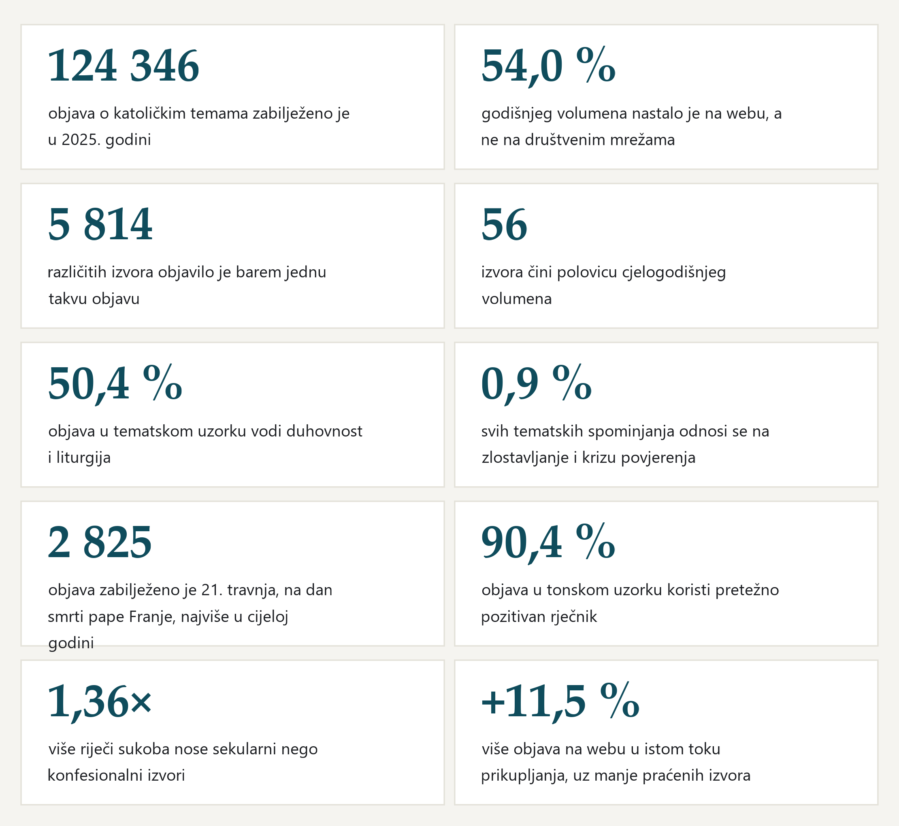
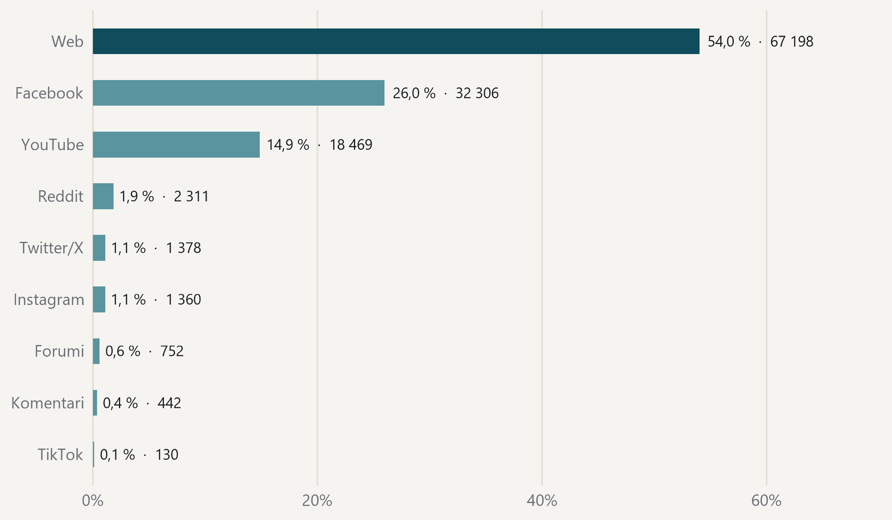
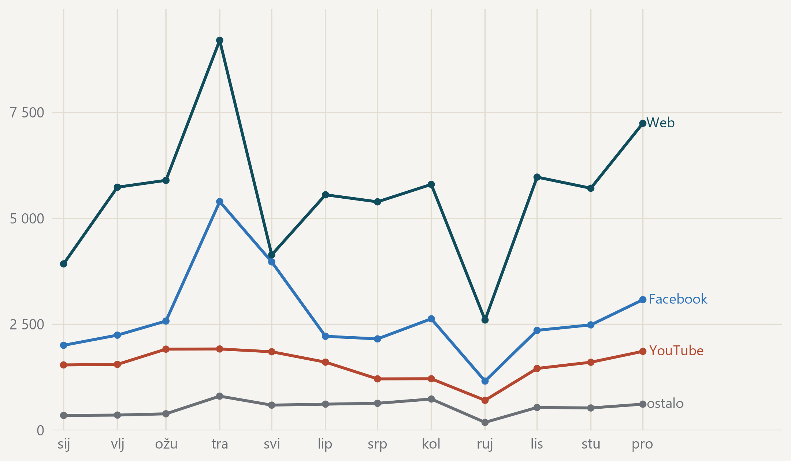
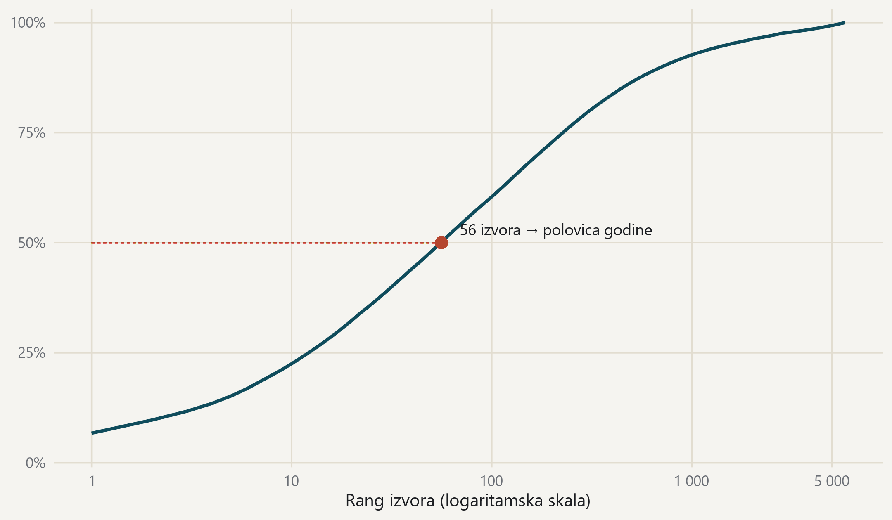
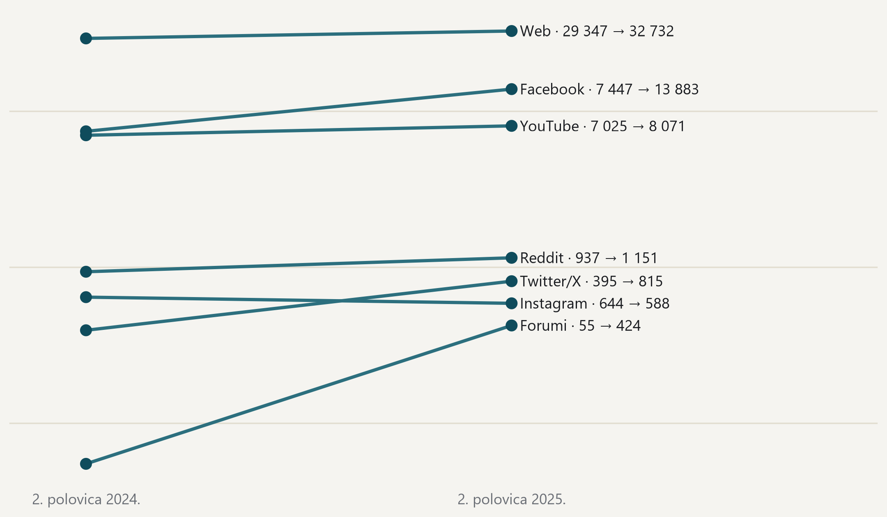
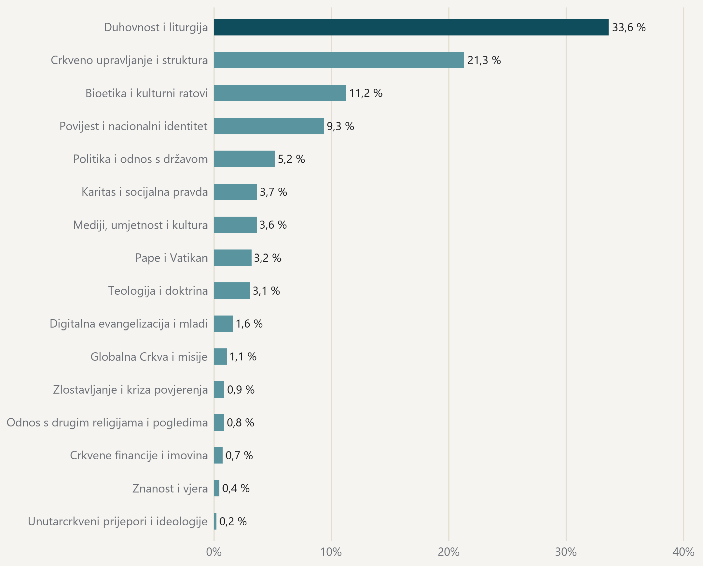
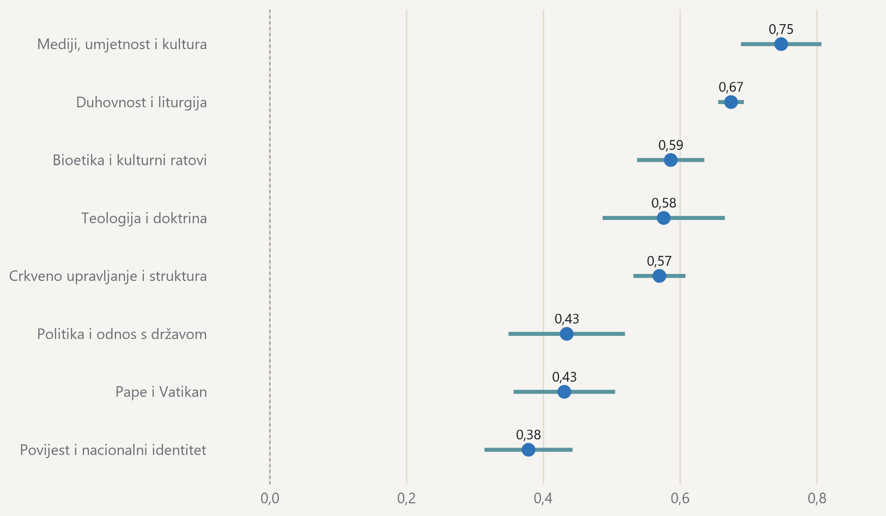
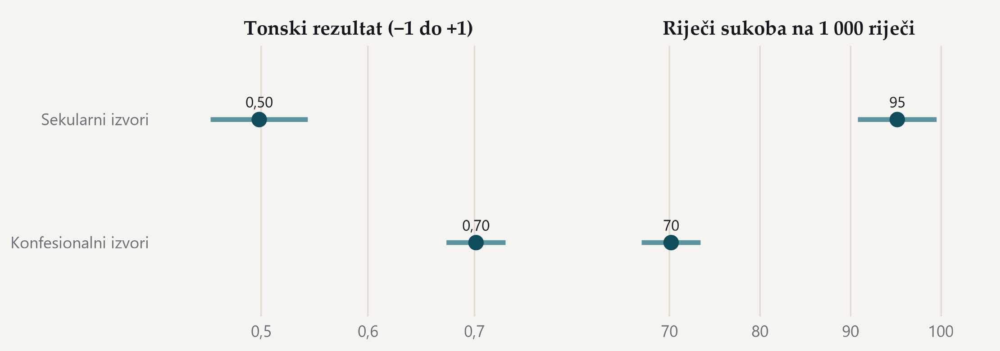
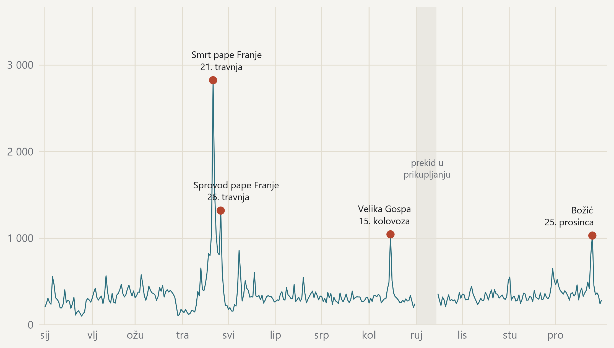

Katoličke teme u digitalnom prostoru
Godišnji pregled 2025.
katolički mediji, digitalni mediji, Hrvatska, DigiKat
Orijentacija
Sažetak u 60 sekundi
Pregled sažima što je tijekom 2025. godine zabilježeno o katoličkim temama u hrvatskom digitalnom prostoru.
- Zabilježeno je 124 346 objava.
- Web nosi 54,0 % godišnjeg volumena.
- Glavna je tema u 50,4 % obrađenih objava.
Može se zaključiti. Pregled pokazuje zabilježenu prisutnost, tematske naglaske i jezik objava u korpusu.
Ne može se zaključiti. Rezultati ne mjere povjerenje publike, uvjerenja autora ni istinitost pojedine tvrdnje.
Nastavite na sažetak nalazaSažetak
Ovo je prvi godišnji pregled DigiKata. Pokazuje što se tijekom 2025. godine u hrvatskom digitalnom prostoru objavljivalo o katoličkim temama, koliko toga ima, tko objavljuje, o čemu se govori i kojim tonom.
Naša baza pokriva hrvatski digitalni medijski prostor u cjelini, od portala i društvenih mreža do videa i komentara. U njoj je 413 985 objava. Prikupljene su od 1. siječnja 2021. do 11. lipnja 2026. Na 2025. godinu otpada 124 346 objava.
- Zabilježili smo 124 346 objava o katoličkim temama u 2025. godini.
- Web je i dalje glavno mjesto rasprave i nosi 54,0 % godišnjeg volumena.
- Objave dolaze iz 5 814 različitih izvora, što je vrlo raspršen prostor.
- Na samo 56 izvora otpada polovica cjelogodišnjeg volumena.
- Duhovnost i liturgija vode godinu i glavna su tema u 50,4 % objava.
- Zlostavljanje i kriza povjerenja čine 0,9 % svih tematskih spominjanja.
- Na dan smrti pape Franje zabilježili smo 2 825 objava, najviše u cijeloj godini.
- Pretežno pozitivan rječnik koristi 90,4 % objava.
- Sekularni izvori nose 1,36× više riječi sukoba od konfesionalnih.
- Web je u drugoj polovici godine objavio +11,5 % više nego godinu prije.
Svaka brojka u ovom pregledu izračunana je iz baze i može se ponoviti. Nijedna nije upisana rukom.
Objava je jedan zapis u bazi, dakle članak, objava na mreži, video ili komentar. Izvor je medij ili račun s kojega je objava došla, a ne pojedina osoba.
Deset brojeva 2025. godine

Svaki je broj izračunan iz korpusa; nijedan nije upisan rukom. · Izvor: DigiKat, službeni korpus. Kalendarska 2025.
Mapa ekosustava
Koliki je prostor?
U 2025. godini zabilježili smo 124 346 objava o katoličkim temama. Više od polovice, 54,0 %, nastalo je na webu, na portalima i stranicama, a ne na društvenim mrežama. Facebook nosi 26,0 %, YouTube 14,9 %.
Web nosi više od polovice zabilježenih objava

Udio platforme u 124 346 objava iz 2025. godine, uz apsolutni broj. · Izvor: DigiKat, službeni korpus. Kalendarska 2025.
Gdje su objave nastale?
| Platforma | Objava | Udio | Interakcija | Doseg |
|---|---|---|---|---|
| Web | 67 198 | 54,0 % | 4 493 667 | 121 037 110 |
| 32 306 | 26,0 % | 4 467 362 | 398 595 788 | |
| YouTube | 18 469 | 14,9 % | 3 366 728 | 80 862 905 |
| 2 311 | 1,9 % | nije zabilježeno | nije zabilježeno | |
| Twitter/X | 1 378 | 1,1 % | 26 308 | 5 201 689 |
| 1 360 | 1,1 % | 470 690 | 4 006 437 | |
| Forumi | 752 | 0,6 % | nije zabilježeno | nije zabilježeno |
| Komentari | 442 | 0,4 % | nije zabilježeno | nije zabilježeno |
| TikTok | 130 | 0,1 % | 145 624 | 2 344 773 |
Izvor: DigiKat, službeni korpus. „Nije zabilježeno” znači da mjerenje na toj platformi ne postoji u prikupljenim podacima, a ne da interakcija ili dosega nije bilo. Objava, interakcija i doseg tri su različita pitanja i ne zbrajaju se.
Broj objava i doseg nisu ista stvar. Facebook čini četvrtinu objava, ali 65,1 % zabilježenoga dosega. Web piše više, a mreže dosežu šire.
Travanj nosi vrh godine, a rujanski pad je prekid u prikupljanju

Mjesečni broj objava, tri najveće platforme i zbroj svih ostalih. · Izvor: DigiKat, službeni korpus. Kalendarska 2025. Rujan je nepotpun jer je prikupljanje stajalo prvih četrnaest dana. Nazivi platformi stoje uz krivulju, pa se čita i bez boje.
Tko vodi?
Objave dolaze iz 5 814 različitih izvora. Prostor je vrlo raspršen, ali raspršenost vara. Prvih deset izvora nosi 22,5 % godine, a 56 izvora čini njezinu polovicu. Ostatak je dugi rep u kojem tisuće izvora godišnje objave po nekoliko puta.
Malo izvora nosi mnogo, ali rep je vrlo dug

Kumulativni udio godišnjeg volumena po rangu izvora; ukupno 5 814 izvora. · Izvor: DigiKat, službeni korpus. Kalendarska 2025.
Koji izvori najviše objavljuju?
| # | Izvor | Objava | Udio godine | Oznaka |
|---|---|---|---|---|
| 1 | hkm.hr | 8 397 | 6,75 % | konfesionalni |
| 2 | Bitno.net | 3 695 | 2,97 % | konfesionalni |
| 3 | Net.hr | 2 207 | 1,77 % | sekularni |
| 4 | Laudato | 2 135 | 1,72 % | konfesionalni |
| 5 | novizivot.net | 2 078 | 1,67 % | konfesionalni |
| 6 | VJERA U NAMA † | 2 047 | 1,65 % | konfesionalni |
| 7 | pulherissimus | 1 775 | 1,43 % | sekularni |
| 8 | Slobodna Dalmacija | 1 583 | 1,27 % | sekularni |
| 9 | Večernji list | 1 491 | 1,20 % | sekularni |
| 10 | Index | 1 392 | 1,12 % | sekularni |
| 11 | Radio Marija Hrvatska | 1 345 | 1,08 % | konfesionalni |
| 12 | Laudato | 1 139 | 0,92 % | konfesionalni |
Izvor: DigiKat, službeni korpus. Imenuju se institucijski mediji s najmanje pet objava u godini, a pojedinačni računi nikada. Redoslijed mjeri količinu, a ne kvalitetu ni utjecaj.
Vodeći institucijski mediji, njih 51, zajedno nose 35,9 % godine.
Među izvorima kojima znamo uređivački identitet konfesionalni mediji nose 62,8 % objava. Ostatak dolazi iz sekularnih i lokalnih medija.
Kako su akteri raspoređeni po interakcijama i dosegu?
| Skupina | Aktera | Udio |
|---|---|---|
| Visoke interakcije i visok doseg | 396 | 45,3 % |
| Visoke interakcije, niži doseg | 44 | 5,0 % |
| Niže interakcije, visok doseg | 44 | 5,0 % |
| Niže interakcije i niži doseg | 391 | 44,7 % |
Izvor: DigiKat, službeni korpus. Skupine nastaju podjelom po medijanu interakcija i medijanu dosega unutar svake platforme, i to samo za platforme koje te dvije mjere doista bilježe. Aktera mora imati barem dvanaest objava u godini. Skupine su opisne, ne ocjene.
Skupine u toj tablici opisuju odnos interakcija i dosega. Jedni imaju široku publiku koja rijetko reagira, drugi manju zajednicu koja reagira na gotovo svaku objavu.
Gdje se razgovor seli?
U drugoj polovici godine web je objavio +11,5 % više nego u drugoj polovici 2024. godine. Broj praćenih web-izvora u istom se razdoblju promijenio za −7,2 %, pa rast ne dolazi od šireg praćenja. Facebook je porastao +86,4 %, ali je ondje i broj praćenih stranica skočio +33,1 %.
Web raste iako pratimo manje izvora nego godinu prije

Objave u drugoj polovici godine, unutar toka prikupljanja koji teče od srpnja 2024.; logaritamska skala. · Izvor: DigiKat, službeni korpus, tok post2024. Usporedba ne prelazi prijelom u prikupljanju iz 2024., a iz obiju polovica uklonjeni su isti kalendarski dani prekida.
Što je raslo, a što padalo?
| Platforma | 2. polovica 2024. | 2. polovica 2025. | Objave | Izvori |
|---|---|---|---|---|
| Web | 29 347 | 32 732 | +11,5 % | −7,2 % |
| 7 447 | 13 883 | +86,4 % | +33,1 % | |
| YouTube | 7 025 | 8 071 | +14,9 % | +10,0 % |
| 937 | 1 151 | +22,8 % | +27,1 % | |
| Twitter/X | 395 | 815 | +106,3 % | +80,6 % |
| 644 | 588 | −8,7 % | −4,3 % | |
| Forumi | 55 | 424 | +670,9 % | +66,7 % |
Izvor: DigiKat, službeni korpus, tok prikupljanja koji teče od srpnja 2024. Zadnji stupac pokazuje mijenja li se broj praćenih izvora. Kad volumen i broj izvora rastu zajedno, vjerojatnije je da se proširilo praćenje nego sama rasprava.
- Raste li web zato što isti izvori objavljuju više, ili zato što se pojavljuju novi naslovi?
- Prati li rast Facebooka i rast publike, ili samo rast broja stranica?
- Koliko se objava istoga izvora pojavljuje na više platformi odjednom?
Tematske struje
O čemu se govorilo?
Godinu vodi ono što Crkva radi svaki tjedan. Duhovnost i liturgija, dakle mise, blagdani, sakramenti i molitva, vodeća je tema u 50,4 % objava. Ta kategorija nosi 33,6 % svih spominjanja. Slijede crkveno upravljanje i struktura, pa bioetičke i kulturne teme.
Godinu vodi ono što Crkva radi svaki tjedan

Udio svih rječničkih spominjanja po kategoriji; prikazano je svih šesnaest kategorija. · Izvor: DigiKat, 6 203 objave iz korpusa za 2025. u tematskom uzorku (5,0 posto korpusne godine; TikTok i tekstovi kraći od 101 znaka nisu obuhvaćeni).
O čemu se govorilo?
| Tema | Spominjanja | Udio spominjanja | Vodeća tema objave |
|---|---|---|---|
| Duhovnost i liturgija | 47 077 | 33,6 % | 50,4 % |
| Crkveno upravljanje i struktura | 29 771 | 21,3 % | 23,5 % |
| Bioetika i kulturni ratovi | 15 750 | 11,2 % | 5,6 % |
| Povijest i nacionalni identitet | 13 090 | 9,3 % | 4,3 % |
| Politika i odnos s državom | 7 275 | 5,2 % | 3,3 % |
| Karitas i socijalna pravda | 5 131 | 3,7 % | 1,5 % |
| Mediji, umjetnost i kultura | 5 098 | 3,6 % | 3,0 % |
| Pape i Vatikan | 4 458 | 3,2 % | 4,6 % |
| Teologija i doktrina | 4 304 | 3,1 % | 1,6 % |
| Digitalna evangelizacija i mladi | 2 254 | 1,6 % | 0,6 % |
| Globalna Crkva i misije | 1 525 | 1,1 % | 0,2 % |
| Zlostavljanje i kriza povjerenja | 1 217 | 0,9 % | 0,1 % |
| Odnos s drugim religijama i pogledima | 1 174 | 0,8 % | 0,5 % |
| Crkvene financije i imovina | 1 003 | 0,7 % | 0,1 % |
| Znanost i vjera | 614 | 0,4 % | 0,1 % |
| Unutarcrkveni prijepori i ideologije | 274 | 0,2 % | 0,0 % |
Izvor: DigiKat, tematski uzorak korpusa za 2025. Dva stupca odgovaraju na dva pitanja. „Udio spominjanja” dijeli sva rječnička pogotka među kategorijama, pa jedna objava može pridonijeti većem broju tema. „Vodeća tema objave” svakoj objavi pripisuje jednu, najjaču kategoriju, pa se taj stupac zbraja na sto posto zajedno s objavama bez ijednog pogotka (0,6 %).
Mit. O Crkvi se u medijima piše uglavnom kad izbije skandal ili sukob.
Podaci. Zlostavljanje i kriza povjerenja čine 0,9 % svih tematskih spominjanja, a unutarcrkveni prijepori 0,2 %. Četiri dana koja u godini najviše odudaraju od uobičajenog ritma redom su liturgijski ili papinski.
- Koje teme rastu kad ih ne nosi blagdan?
- Piše li o bioetici ista skupina izvora koja piše o liturgiji?
- Koliko dugo jedna tema drži prostor prije nego što je zamijeni druga?
Atmosfera diskursa
Kakvim se tonom govori?
Godina zvuči vedrije nego što se obično pretpostavlja. Pretežno pozitivan rječnik koristi 90,4 % objava, a prosjek godine je 0,61 na ljestvici od −1 do +1. Razlog je dobrim dijelom sam predmet, jer obavijesti o misi, blagoslovu i slavlju nose pozitivne riječi.
Nijedna tema godine nije u prosjeku negativna

Prosječan tonski rezultat po vodećoj temi objave, od −1 do +1; kategorije s najmanje 30 objava. · Izvor: DigiKat, 2 479 objava iz korpusa za 2025. u tonskom uzorku (2,0 posto korpusne godine). Crte prikazuju 95-postotni interval.
Kojim se tonom govori o vodećim temama?
| Tema | Objava | Tonski rezultat | Riječi sukoba |
|---|---|---|---|
| Mediji, umjetnost i kultura | 69 | 0,75 | 63 |
| Duhovnost i liturgija | 1 270 | 0,67 | 71 |
| Bioetika i kulturni ratovi | 133 | 0,59 | 98 |
| Teologija i doktrina | 41 | 0,58 | 73 |
| Crkveno upravljanje i struktura | 581 | 0,57 | 76 |
| Politika i odnos s državom | 76 | 0,43 | 86 |
| Pape i Vatikan | 119 | 0,43 | 94 |
| Povijest i nacionalni identitet | 115 | 0,38 | 95 |
Izvor: DigiKat, tonski uzorak korpusa za 2025. Tonski rezultat ide od −1 do +1 i mjeri rječnik, a ne stav autora ni istinitost tvrdnje. „Riječi sukoba” broje pojmove sukoba, ljutnje i straha na tisuću riječi. Prikazane su samo teme s najmanje trideset objava u uzorku.
Uz ton pratimo i koliko se često koriste riječi sukoba, dakle pojmovi ljutnje, straha, napada, podjele i skandala. Prosjek godine je 76 takvih riječi na tisuću.
Razlika između konfesionalnih i sekularnih izvora vidljiva je i mjerljiva. Konfesionalni izvori nose 70 riječi sukoba na tisuću, a sekularni 95, dakle 1,36× više. Sekularni medij o Crkvi češće piše kad je tema spor, a konfesionalni pokriva i redovni život zajednice.
Sekularni izvori pišu o istoj temi oštrijim rječnikom

Konfesionalni (530 objava) i sekularni izvori (321 objava) u tonskom uzorku. · Izvor: DigiKat, 2 479 objava iz korpusa za 2025. u tonskom uzorku (2,0 posto korpusne godine). Crte prikazuju 95-postotni interval. Uredničke oznake izvora imaju status prijedloga, pa je usporedba indikativna.
- Ostaje li razlika u rječniku i kad se usporede objave o istom događaju istoga dana?
- Kako se ton mijenja unutar jednog događajnog luka, od prve vijesti do komentara?
- Razlikuju li se po tonu nacionalni i lokalni mediji jednako kao konfesionalni i sekularni?
Fokus na događaje
Što je obilježilo godinu?
Godina ima jedan jasan vrh. Na dan 21. travnja 2025. zabilježili smo 2 825 objava. To je 12,0 standardnih devijacija iznad prosječnog dana i najviše u cijeloj godini. Cijeli luk od 20. 4. 2025. do 23. 4. 2025. nosi 6 484 objave.
Papa Franjo umro je 21. travnja 2025. godine, na Uskrsni ponedjeljak, a sprovod je održan 26. travnja. Oba su datuma među danima koji u našim podacima najjače odudaraju od godišnjeg ritma. Tih dana kategorija „Pape i Vatikan” raste na svoj godišnji vrhunac, a uz nju vode duhovnost i liturgija te crkveno upravljanje.
Godina ima jedan vrh, i on nije bio sporan

Broj objava po danu, 351 dan s prikupljanjem; označeni su dani iznad tri standardne devijacije. · Izvor: DigiKat, službeni korpus. Kalendarska 2025. Prag za vrhunac postavljen je prije pregleda podataka, a prosjek i raspršenost računaju se samo nad danima s prikupljanjem.
Koji su dani odudarali od godišnjeg ritma?
| Datum | Događaj | Objava | Odstupanje | Dana u luku |
|---|---|---|---|---|
| 21. 4. 2025. | Smrt pape Franje | 2 825 | 12,0 sd | 4 |
| 26. 4. 2025. | Sprovod pape Franje | 1 320 | 4,7 sd | 1 |
| 15. 8. 2025. | Velika Gospa | 1 045 | 3,4 sd | 1 |
| 25. 12. 2025. | Božić | 1 031 | 3,3 sd | 1 |
Izvor: DigiKat, službeni korpus, svi dani u godini. Odstupanje je udaljenost od prosječnog dana u godini, izražena u standardnim devijacijama; prag od tri postavljen je prije pregleda podataka. Nazivi dolaze iz javnog kalendara i potvrđeni su tematskim sastavom tih dana, jer vrh sam po sebi pokazuje datum, a ne uzrok.
Preostala tri vrhunca su Velika Gospa i Božić, dakle blagdani koji se ponavljaju svake godine, te drugi papinski dan. Godina nema nijedan vrhunac koji bi nastao iz spora.
- Tko je o smrti pape objavio prvi, a tko je prenosio?
- Koliko dana događaj drži pažnju nakon vrhunca?
- Ostavlja li veliki događaj trag u volumenu i mjesecima poslije?
Posebno poglavlje o socijalnom nauku i gospodarstvu
Svaka edicija donosi jedno dovršeno istraživanje, odvojeno od redovnih pokazatelja. Ove godine to je studija o tome koji dijelovi socijalnoga nauka Crkve ulaze u digitalnu javnu raspravu o gospodarstvu.
Studija je pretražila 108 966 objava u kojima se religijski i gospodarski govor susreću, a zatim ručno provjerila uzorak. Doktrinarni pojmovi poput dostojanstva rada, opcije za siromašne, supsidijarnosti i općega dobra javljaju se u 3,73 % takvih susreta.
Što je pokazala studija o socijalnom nauku i gospodarstvu?
| Mjera | Vrijednost |
|---|---|
| Objave u kojima se religijski i gospodarski govor susreću (sirovi nalaz detektora) | 108 966 |
| Objave s izrazom socijalnoga nauka uz gospodarski pojam | 1 198 |
| Ispravljena procjena udjela doktrinarnih parova (%) | 3,73 |
| Udio konfesionalnih izvora među razvrstanim doktrinarnim objavama (%) | 67,02 |
Izvor: generirani rezultati studije
moral-economy. Vrijednosti pokrivaju cijelo razdoblje te studije, a ne izvještajnu godinu, i ne ulaze u godišnje pokazatelje. Prva dva reda su ono što je detektor pronašao; ispravljena procjena dijeli taj nalaz preciznošću koju je pokazala ručna provjera uzorka.
Zaključak studije je da Crkva u gospodarskoj raspravi govori rijetko, ali kad govori, govori razmjerno dosljedno vlastitom rječniku.
Što slijedi
Ovo je prva edicija i svaka sljedeća donosi jedan sloj više.
Kompozitni indeks godine. Jedan zbirni broj koji sažima godinu i pokazuje smjer. Uvodimo ga kad referentna godina bude zamrznuta, da se ne mijenja zajedno s onim što mjeri.
Strelice promjene. Od sljedeće edicije uz svaku ljestvicu stoji promjena prema prethodnoj godini, a poseban dio pregleda vraća se na brojke koje smo objavili.
Prijenos crkvenoga glasa. Kad sekularni medij piše o temi o kojoj je crkveni izvor već govorio, koliko se često i koliko brzo u toj objavi pojavi crkveni okvir.
Publika. Kako publika te sadržaje susreće, koliko im vjeruje i što s njima radi. Za to pripremamo anketu s vlastitim uzorkom i instrumentom.
Što ovaj pregled već mjeri, a što dolazi?
| Oznaka | Pokazatelj | Status |
|---|---|---|
| AR01 | Volumen zabilježene rasprave | objavljeno |
| AR02 | Indikativni sastav izvora | indikativno |
| AR03 | Vodeći institucionalni akteri | objavljeno |
| AR04 | Raspored aktera po interakcijama i dosegu | objavljeno bez kretanja |
| AR05 | Referentne vrijednosti angažmana | objavljeno |
| AR06 | Tematski profil | objavljeno |
| AR07 | Ton i sukob | objavljeno |
| AR08 | Dani koji odudaraju | objavljeno |
| AR09 | Prijenos crkvenoga glasa | u pripremi |
| AR10 | Anketa publike | u pripremi |
Puna definicija svakog pokazatelja, pravilo usporedivosti i povijest promjena nalaze se u dokumentu
INDICATORS.md.
Metodologija
Baza. 413 985 objava, od 1. siječnja 2021. do 11. lipnja 2026. Jedno pravilo uključivanja vrijedi za cijelo razdoblje. Popis od 119 religijskih pojmova mora se javiti u prvih tri tisuće znakova teksta, a model drugoga prolaza mora objavu ocijeniti iznad 0,70. Ručno čitani uzorci daju procjenu točnosti od oko 84,5 %.
Okvir. Baza je tematska, a ne izvorna. Obuhvaća i konfesionalne i sekularne izvore, sve dok objava govori o katoličkim temama, a sadrži i regionalne, uključujući bosanskohercegovačke sadržaje.
Godina. 124 346 objava na 351 dan s prikupljanjem. Prekid od 1. rujna 2025. do 14. rujna 2025. označen je na svim prikazima i isključen iz svakog prosjeka. Prosječan dan oko prekida nosio je 282 objave, pa procjenjujemo da u prekidu nedostaje oko 3 948 objava.
Usporedbe. Način prikupljanja promijenio se sredinom 2024. godine, pa se svaka usporedba u ovom pregledu izvodi unutar istoga toka prikupljanja i na jednakom broju dana.
Vrhunci. Dan se izdvaja ako je tri ili više standardnih devijacija iznad prosjeka godine. Prag je postavljen prije nego što su podaci pregledani, a prosjek i raspršenost računaju se samo nad danima s prikupljanjem. Dani koji su međusobno udaljeni najviše dva dana pripadaju istom luku. Vrh u podacima pokazuje datum, a ne uzrok, pa je uz svaki naziv provjeren tematski sastav tih dana.
Teme. Zamrznuti rječnik od šesnaest kategorija, računan na slučajnom uzorku od 6 203 objave, odnosno 5,0 % godine. Udio spominjanja dijeli sve pogotke, pa jedna objava može pridonijeti većem broju tema, dok vodeća tema objave svakoj objavi pripisuje jednu kategoriju. Rječnik prepoznaje riječi, a ne značenje.
Ton. Tonski rezultat računa se iz hrvatskih rječnika sentimenta na lemama, na ljestvici od −1 do +1, na uzorku od 2 479 objava, odnosno 2,0 % godine. Riječi sukoba broje pojmove ljutnje, straha, gađenja i sukoba na tisuću riječi. Obje mjere opisuju rječnik objave, a ne stav autora ni istinitost tvrdnje.
Oznake izvora. Uređivačke oznake konfesionalnih i sekularnih izvora imaju status prijedloga i pokrivaju 34,5 % godišnjeg volumena, pa je svaka usporedba po njima indikativna.
Imenovanje. Imenuju se samo institucijski mediji koji u godini imaju barem pet objava. Pojedinačni računi ne imenuju se nikada, a ćelije ispod praga se potiskuju.
Ponovljivost. Cjelovita definicija svakog pokazatelja, pravilo usporedivosti i povijest promjena nalaze se u dokumentu INDICATORS.md. Pregledani agregati objavljuju se uz pregled.
Dodatak s oglednim profilima institucijskih izvora
hkm.hr
Web · Visoke interakcije i visok doseg
- Objava u 2025.: 8 397
- Interakcija: 157 778
- Interakcija po objavi: 18,8, odnosno 0,35 medijana svoje skupine na istoj platformi
VJERA U NAMA †
Facebook · Visoke interakcije i visok doseg
- Objava u 2025.: 2 047
- Interakcija: 52 534
- Interakcija po objavi: 25,7, odnosno 0,22 medijana svoje skupine na istoj platformi
pulherissimus
YouTube · Visoke interakcije i visok doseg
- Objava u 2025.: 1 775
- Interakcija: 540 306
- Interakcija po objavi: 304,4, odnosno 1,55 medijana svoje skupine na istoj platformi
Laudato
Instagram · Visoke interakcije, niži doseg
- Objava u 2025.: 30
- Interakcija: 16 341
- Interakcija po objavi: 544,7, odnosno 1,00 medijana svoje skupine na istoj platformi
dnevniavaz
Instagram · Niže interakcije, visok doseg
- Objava u 2025.: 28
- Interakcija: 11 578
- Interakcija po objavi: 413,5, odnosno 1,00 medijana svoje skupine na istoj platformi
Dnevnik.hr
TikTok · Niže interakcije i niži doseg
- Objava u 2025.: 13
- Interakcija: 11 625
- Interakcija po objavi: 894,2, odnosno 1,00 medijana svoje skupine na istoj platformi
Neovisnost, licencija i zahvale
Pregled uređuje doc. dr. sc. Luka Šikić s Hrvatskoga katoličkog sveučilišta.
Obuhvaćeni akteri nemaju nikakvu ulogu u odabiru pokazatelja, analizi, tumačenju ni odobravanju pregleda. Prije objave održava se kratko informativno predstavljanje pod embargom, koje ne može promijeniti rezultat, osim ako se utvrdi provjerljiva činjenična pogreška.
Pregledani agregati i tekst objavljuju se pod licencijom CC BY 4.0, ondje gdje to dopuštaju prava izvora. Redovi s tekstom objava, poveznice i identiteti pojedinaca nisu dio objavljenog paketa.
U pripremi analitičkog cjevovoda, nacrta i mehaničkih provjera korišten je Claude Code. Odgovornost za metodološke odluke, uredničke oznake i objavu ostaje na uredniku i istraživačkom timu.
Pitanja o podacima i metodi šaljite na luka.sikic@unicath.hr · Hrvatsko katoličko sveučilište, Ilica 242, Zagreb · lusiki.github.io/DigiKat
Preporučeno citiranje. Šikić, L. (2026). Katoličke teme u digitalnom prostoru. Godišnji pregled 2025. DigiKat, Hrvatsko katoličko sveučilište.
Stalna poveznica. Mrežno izdanje
PDF izdanje. Preuzmite PDF
Licencija. CC BY 4.0
Stabilno izdanje. Objavljeno 10. kolovoza 2026. i ažurirano 24. kolovoza 2026.